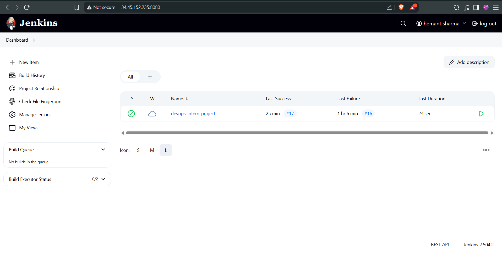
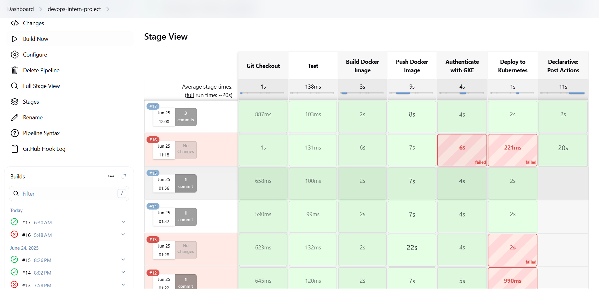
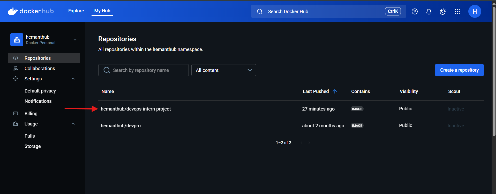
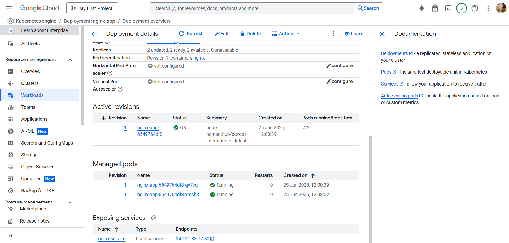
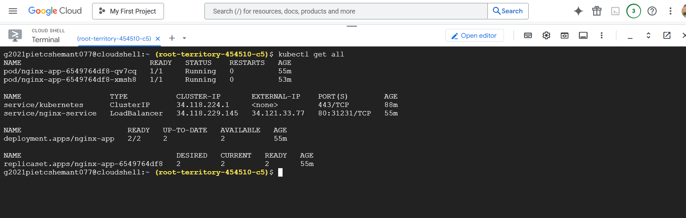
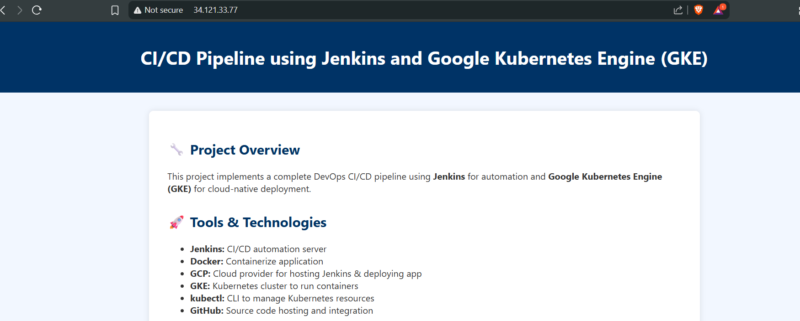
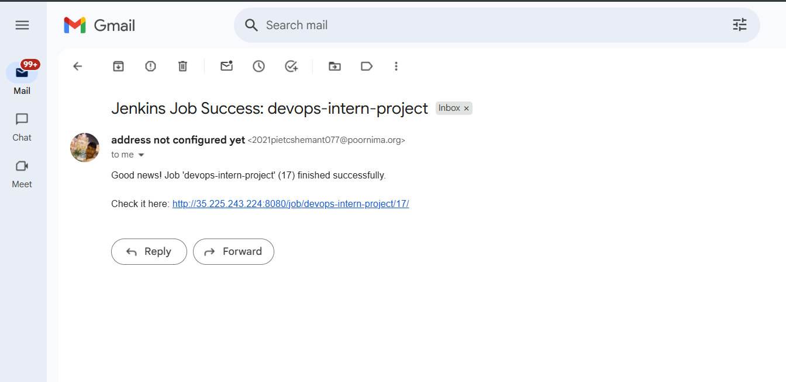

Name: Hemant Sharma
Date: 25 June 2025
This project demonstrates the implementation of a CI/CD pipeline using Jenkins, Docker, and Google Kubernetes Engine (GKE). The pipeline automates code integration, Docker image creation, image upload to Docker Hub, and application deployment to Kubernetes.
| Tool | Purpose |
|---|---|
| Jenkins | CI/CD automation |
| Docker | Containerization |
| GitHub | Version control |
| GKE | Kubernetes deployment |
| Google Cloud SDK | GKE auth & config |
| kubectl | Kubernetes CLI |
| Jenkins Plugins | Email-ext, Docker, GKE credentials |
The Jenkinsfile contains the following stages:
Showing successful build
Stage View with step durations
Pushed image hemanthub/devops-intern-project visible
Deployment and running pods
Shows LoadBalancer IP and service details
Application accessible via external IP
Triggered post-deployment email alert
This project demonstrates a robust CI/CD pipeline that automates the complete lifecycle from code check-in to deployment on GKE. Tools like Jenkins, Docker, and Kubernetes have been successfully orchestrated to form a scalable DevOps workflow.
Full AWS pipeline project using AWS CodePipeline, CodeCommit and CodeBuild
Full CI/CD pipeline using Jenkins, Kubernetes, Docker
Creating ingress controller for traffic routed to different services
Deploy application on Kubernetes cluster